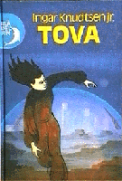

Tova
Cappelen 1979
Innbundet, 158 s.
ISBN 82-02-04372-7
Dansk utgave:
Kampen om Mars
Oversatt av Ulla Warren
Haase 1981
Innbundet, 157 s.
ISBN 87-559-0528-5
Baksidetekst
“Lavt inn fra øst, nesten usynlige i soltrålene, kom tre helikopterliknende fartøyer svevende. De fløt liksom framover gjennom den tynne Mars-luften, båret på de blåhvite flammene fra reaksjonsmotorene. I det ene sekundet fløy de like over ringbergene som små, vingeløse øyenstikkere - i det neste styrtet de store og farlige ned mot den morgendøsige husklyngen. Det siste mannen som oppdaget dem fikk se, var glimtet fra søkerpulsen til en laserkanon, som blindet ham før den utløste den dødelige strålen. Død og ødeleggelse lynte ned over mennesker og hus.” Bare fjortenårige Tova overlever angrepet. Utmattet og fortumlet plukkes hun opp langt ute i ørkenen av medlemmer fra MRO, frihetskjempernes organisasjon som lever under jorda. Denne fantastiske historien fra den despotisk styrte kolonistaten Mars er også skildringen av en ung pikes søken etter sin egen identitet. For Tova er det kanskje enda mer komplisert enn for nåtidens jenter. Av Ingar Knudtsen har vi tidligere gitt ut Tyrannosaurus Rex.
Forfatterens kommentar
Ingen tvil. Jeg er fremdeles fornøyd med denne boka. Sjøl om jeg måtte tilpasse også denne til et yngre publikum enn jeg hadde ment den for. Den burde jo også være brennaktuell nå ved at den går rett inn i den nyoppblomstrede diskusjonen om kloning, og i tillegg foregår på den planeten som nylig fikk jordisk besøk igjen! Ellers var jo Tova en av de etterhvert mange Marshistoriene mine. Om og med Mars Romorganisasjon (MSO/MRO). Historier om frihetskjempere. Om kolonialisme, undertrykking, utbytting, motstand. Science fiction er og blir en djupt politisk litteratur!